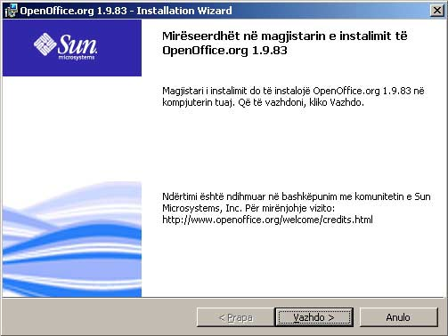
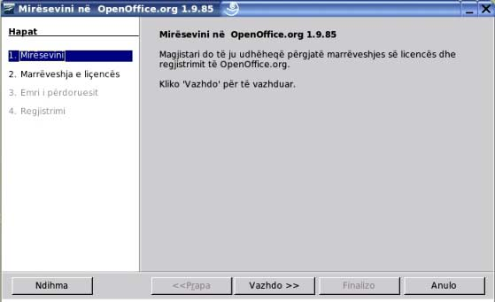

Përparësitë e pakos së përbashkët softuerike
- OpenOffice.org është më shumë se një koleksion i disa veglave softverike.
- Për dalllim nga disa programe konkurente, ky paket nuk është krijuar si koleksion i aplikacioneve të veçanta. Që nga fillimi, është dizajnuar si një pako softverike komplete për përdorim afarist.
- Të gjitha aplikacionet kanë �pamje dhe ndjenjë� të njëjtë, duke i bërë kështu ato të lehta për përdorim, veglat të bazuar në konceptin �mëso njëherë dhe përdore gjithkund�, si për shembull Navigatori dhe Stilisti.
- Të njëjtat veglat përdoren në mënyrë konsistente përgjatë pakos � për shembull veglat me të cilat i përdorni në punë grafike në Writer gjenden poashtu në Impress dhe në Draw.
- Ju nuk keni nevojë të dini se cili aplikacion është përdorur për të krijuar dokumentin e caktuar. Ju mund të zgjedhni: File > Hape, kudo nga OpenOffice.org dhe aplikacioni përkatës do të aktivizohet.
- Të gjitha aplikacionet shfrytëzojnë �Opcione� të përbashkëta. Ju i modifikoni në njërën, dhe kjo afekton të gjitha.
- Informatat mund të barten lehtë në mes të gjitha aplikacioneve.
- Të gjitha aplikacionet i ruajnë të dhënat në të njëjtin standard industrial të formatit XML; me kursim të theksuar të hapësirës së diskut, krahasuar me formatet e veçanta të prodhuesve.
- Të gjitha aplikacionet instalohen në një operacion të vetëm.
- Të gjitha aplikacionet u nënshtrohen të njëjtit model të hapur licensues � nuk ka pagesa të fshehta tash ose në të ardhmen.

 |
|